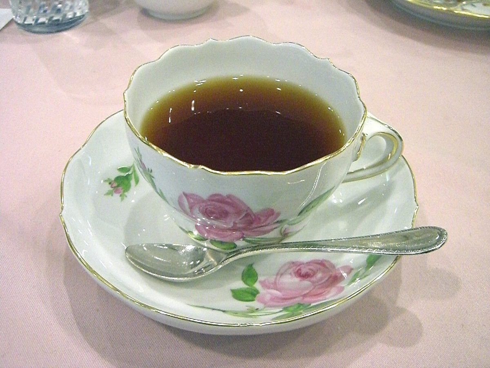
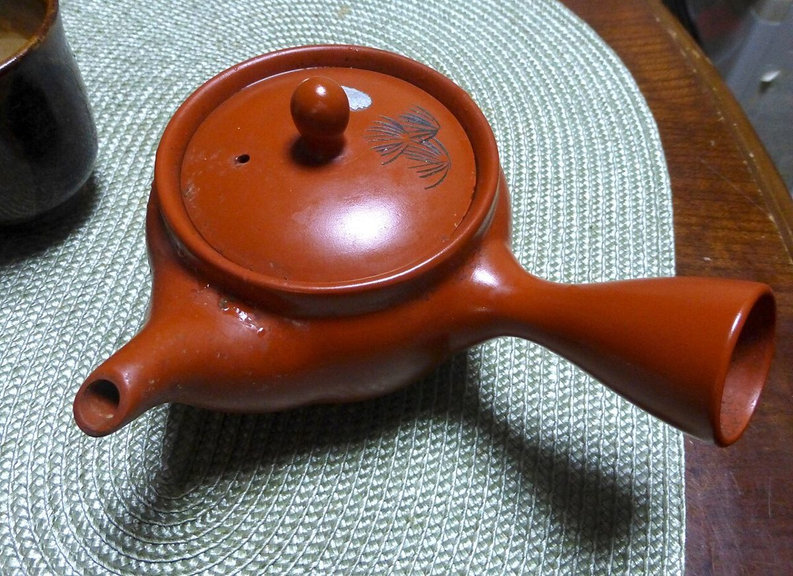
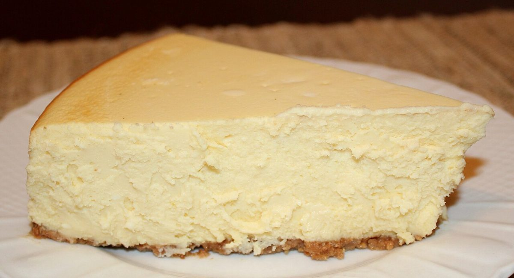
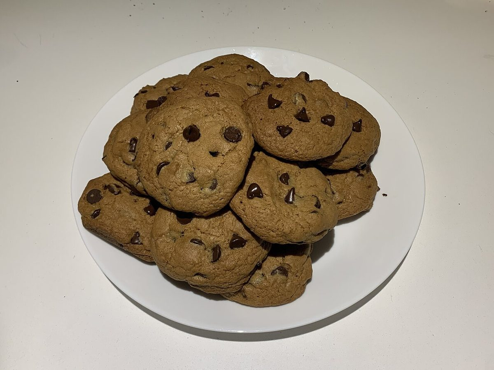
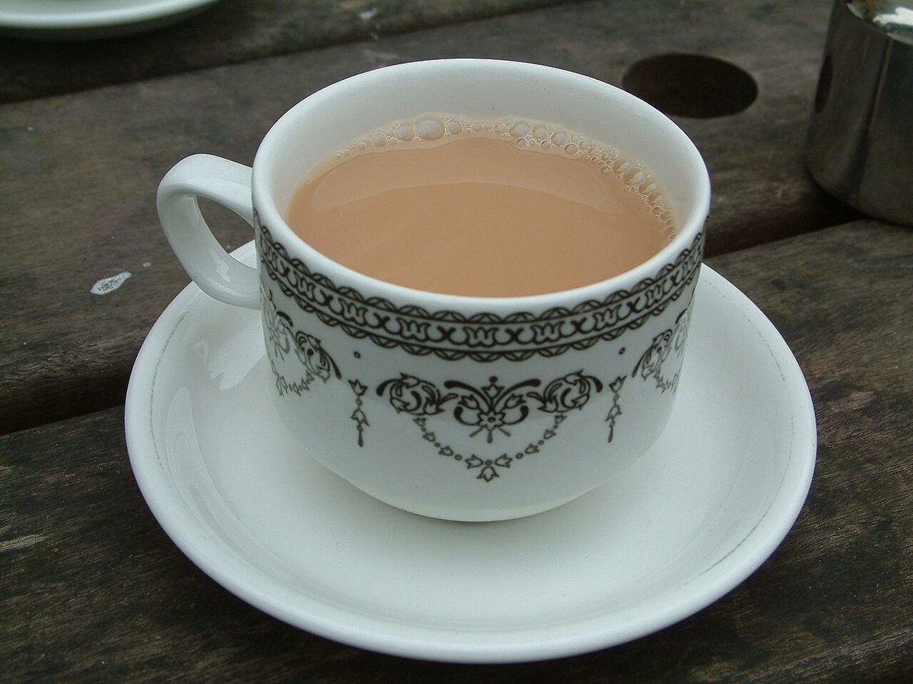
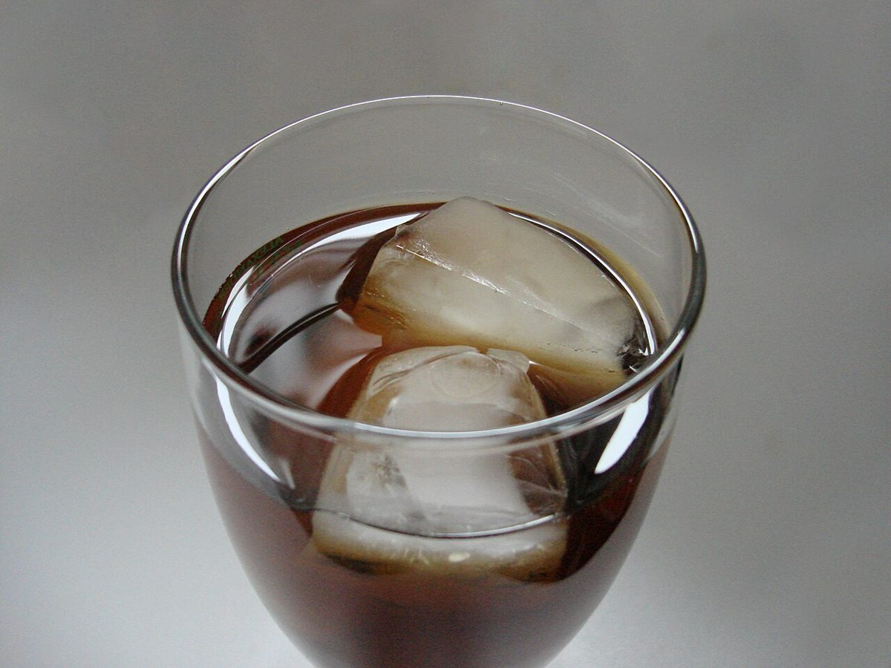

Tea &Sweets Stand 離れ家
お茶とスイーツの、ひと休みの時間。
※このコンセプトは制作側の案です。お店の公式な理念・言葉ではありません。
岩手県花巻市大通り。Tea と Sweets の名を掲げるお店で、お茶とスイーツのひとときをお過ごしください。



このお店で過ごす時間
忙しい日の合間に、お茶を一杯。気分を変えたい日に、甘いものをひと口。Tea &Sweets Stand 離れ家は、お茶とスイーツを楽しむお店です。
具体的なメニューや営業時間は、現在準備中です(お問い合わせください)。



ご案内
05
営業時間・定休日
お問い合わせはお電話かInstagramで
メニュー・営業時間などの詳細は、お気軽にお問い合わせください。